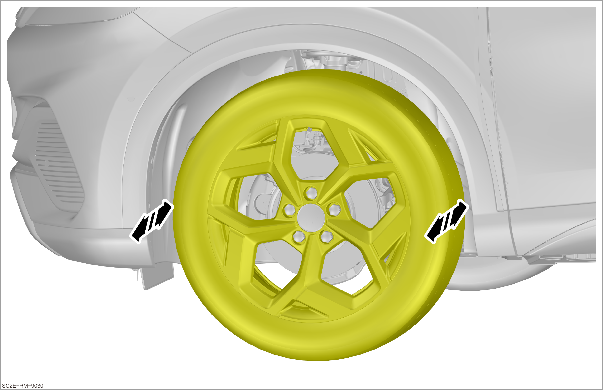
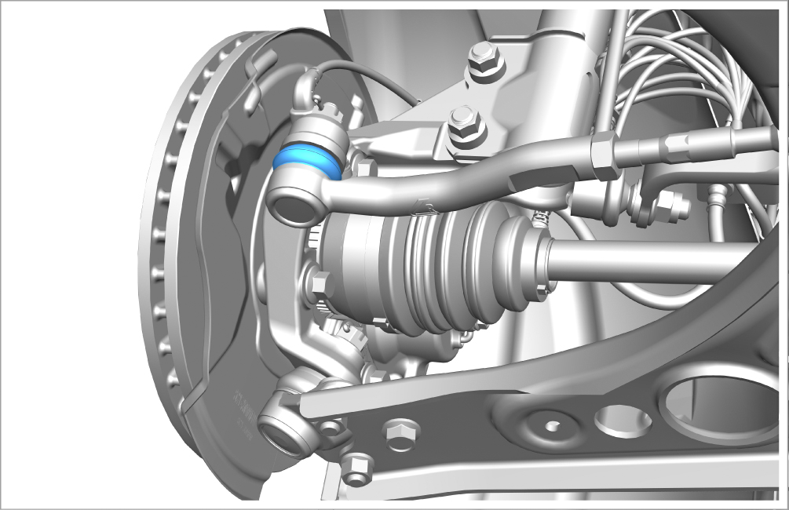
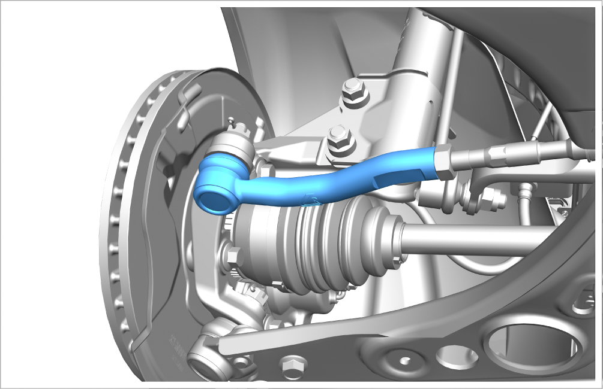
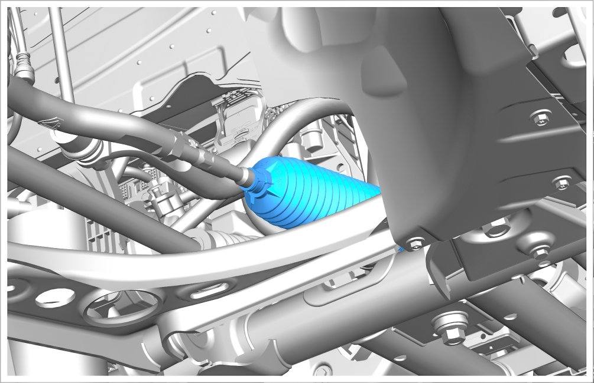

Inspection of Steering Link Ball Pin
Check the steering link ball pin for clearance and fixation, and check the status of the dust cover

The inspection methods of left and right steering link ball pins and dust covers are the same.
-
Lift the vehicle, and rotate the wheel left and right horizontally to check the clearance of steering outer link ball pins. There shall be no clearance.
ReminderWhether there is clearance in the steering outer link ball pin can be judged with reference to whether there is clearance when turning the steering wheel.
 -
Check the dust cover of steering outer link ball pin for damage and aging.
Reminder-
Prolonged entry of dirt or moisture due to a damaged dust cover may result in steering outer link ball pin damage, and the ball pin must be replaced.
 -
-
Check that the steering outer link ball pin nut is fastened without looseness and all lock pins are in place.
 -
Check that the steering link dust cover is free from damage and aging and is installed in place.
Reminder-
The steering link dust cover of the mechanical steering gear may be damaged due to external factors, such as being hit by stones or being damaged during assembly.
-
Prolonged entry of dirt or moisture due to a damaged dust cover may result in mechanical steering gear damage.
 -
-
Check that the mechanical steering gear, including the steering tie rod area, is free of leakage and damage.
-
Obtain a new work order for repair or replacement.